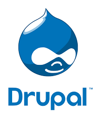

Es un sistema de gestión de contenidos o CMS libre, modular, multipropósito y muy configurable que permite
publicar artículos, imágenes, archivos y que también ofrece la posibilidad de otros servicios añadidos como
foros, encuestas, votaciones, blogs, administración de usuarios y permisos.

Primero abrimos xampp e inicializamos los servidores de Apache y MySQL.(Acá ya se encuentran inicializados)
Nos vamos al administrador de MySQL. Luego aquí mismo crearemos una nueva base de datos (en nuestro caso ya la creamos “Drupal”).
Se descomprime el archivo de Drupal el cual descargamos de la página oficial de Drupal. Luego de esto vamos a abrir la carpeta que nos dejara, copiaremos todos los archivos de esta y los iremos a pegar a la carpeta htdocs alojada en la carpeta XAMPP, ahora para ser más ordenados dentro de la carpeta htdocs crearemos una carpeta con el nombre de Drupal y ahí pegaremos los archivos que copiamos.
Luego de hacer vamos a ir a nuestro navegador y vamos a abrir nuestro localhost y seleccionaremos la carpeta Drupal o podemos poner de una vez localhost/Drupal o el nombre que le hallas puesto a la carpeta en htdocs. Escogemos el idioma y damos clic en “Guardar y Continuar”.
Seleccionaremos la instalación estándar y daremos “Guardar y Continuar”.
Nos mostrara los requerimientos para proseguir con la instalación aquí solo daremos “Continuar de todos modos”
Acá escribiremos el nombre de la base de datos que creamos en el primer paso y nuestro usuario y contraseña y daremos “Guardar y continuar”.
Observamos como empieza la instalación. De paso también se bajarán unas traducciones.
Configuraremos la cuenta para usarla con nuestro correo y más, ajustando también el país por defecto y también la zona horaria. Luego daremos en “Guardar y continuar”.
Es el ultimo paso solo esperamos a que termine de configurar las traducciones y listo.
Drupal instalado y listo para usarse.
Puede definir campos personalizados que podrán ser utilizados en tipos de contenido, usuarios, comentarios, términos y otras entidades. Almacene los datos de esos campos en SQL, NoSQL o utilice almacenamiento remoto.
Controle exactamente qué se muestra en pantalla con la nueva Render API y algunos hooks drásticos para modificaciones. El nuevo módulo RDF provee marcado semántico para la web.
Las pantallas de administración son ahora mucho más accesibles. Las abundantes mejoras en el interfaz le facilitan la construcción de páginas web altamente accesibles.
El soporte de ímagenes en el contenido está ahora incorporado en el núcleo. Genere versiones diferentes para thumbnails, vistas previas y otros estilos de imágenes. Ahora es posible utilizar las gestiones privada y pública de ficheros al mismo tiempo.
Un nuevo entorno de testing automatizado, con más de 30.000 tests incluidos permite el testing de integración continua de todos los parches al núcleo de Drupal y a los módulos contribuidos.
Una nueva capa de abstracción de base de datos provee soporte para SQLite, MySQL/MariaDB y PostgreSQL out-of-the-box. Puede instalar módulos contribuidos para utilizar MS SQL Server, Oracle, y más.
Utilice perfiles de instalación para distribuir su producto personalizado basado en Drupal. Una nueva API y configuración exportable le permite capturar más opciónes en código.
Gracias a un enorme esfuerzo de la comunidad, más de 800 módulos están disponibles o bajo desarrollo activo para Drupal 7, incluyendo Views, Pathauto, y WYSIWYG, con muchos otros en el camino de actualizarse cada día.
Drupal está basado en un stack tecnológico elemental que debes contemplar para poder llevar a cabo tu proyecto. De una manera general, podríamos decir que necesitas varios niveles:
Hardware para alojar tu proyecto
Tu software para correr en el servidor anterior. Drupal puede funcionar en Unix, Linux, BSD, OS X y Windows.
Drupal necesita una base de datos para almacenar contenidos y configuraciones (hasta Drupal 7), y puede usarse MySQL o PostgreSQL.
es un componente software responsable de servir los sitios web y los contenidos, que irá entre el servidor y el navegador que visite la plataforma. Normalmente se usa Apache Web Server , aunque Drupal puede montarse sobre un IIS de Microsoft.
Es el lenguaje de programación en el que está construido Drupal y necesitarás cargar el interprete del lenguaje en tu servidor asi como instalar algunas librerias importantes para trabajar con él.
El gestor de contenidos/framework para construir sitios web dinámicos que será la última herramienta que tendrás que instalar en tu servidor.